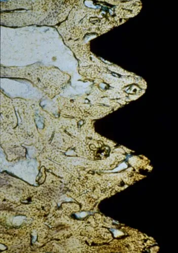

نسخه استخراجشده؛ ترجمه یا تأیید علمی انجام نشده است. وضعیت: captured
در دههی ۱۹۶۰ دیده شد محفظهی تیتانیومی که در استخوان خرگوش گذاشته شده بود، دیگر بیرون نمیآید. این پدیده را استئواینتگریشن نامیدند: تماس مستقیم استخوان زنده با سطح ایمپلنت در حد میکروسکوپ نوری — بدون هیچ لایهی بافت نرمی در میان.
این یک تعریف هیستولوژیک است و فقط با برش بافتی اثبات میشود؛ در مطب به کارت نمیآید. برای همین یک تعریف بالینی هم ارائه شد: «فرایندی که در آن تثبیت سفت و بدون علامتِ یک مادهی آلوپلاستیک در استخوان، زیر بار عملکردی، به دست میآید و حفظ میشود.»
پس آنچه شما در مطب میسنجید بیحرکتی است، نه درصد تماس. و آن درصد — که به آن BIC میگویند — هرگز ۱۰۰ نیست: در پایان فاز ریمادلینگ حدود ۶۰ تا ۷۰ درصد سطح ایمپلنت با استخوان تماس دارد.
BIC را فقط روی برش بافتی میشود اندازه گرفت. در مطب، پایداری را با تورک درج — که به طراحی ایمپلنت و شکل استئوتومی هم وابسته است — یا با آنالیز فرکانس رزونانس (RFA) میسنجیم؛ RFA سفتی رابط را غیرمستقیم برآورد میکند و عددی به نام ضریب پایداری ایمپلنت (ISQ) از ۱ تا ۱۰۰ میدهد.

اگر ترمیم بهجای استخوان بافت همبند بسازد، فیبرواینتگریشن رخ داده است: ایمپلنتِ متحرک، دردناک و محکوم به شکست. سه علت کلاسیکاش: میکروموومنت بیش از آستانه (حدود ۵۰ تا ۱۵۰ میکرون) در فاز ترمیم، ترومای حرارتی هنگام استئوتومی، و عفونت.
اما «شکست نخوردن» با «موفق بودن» یکی نیست. معیارهای کلاسیک موفقیت ایمپلنت (۱۹۸۶): بیحرکتی کامل، نبودِ رادیولوسنسی دور ایمپلنت، تحلیل استخوان کمتر از ۰٫۲ میلیمتر در سال پس از سال اول، و نبودِ درد و عفونت پایدار. برای پذیرفتن یک روش درمانی هم دستکم ۸۵ درصد موفقیت در ۵ سال و ۸۰ درصد در ۱۰ سال لازم دانسته شد.
مقیاس سلامت ایمپلنت همین طیف را درجهبندی میکند: موفقیت، بقای رضایتبخش، بقای بهخطرافتاده، و شکست — و هر طبقه پروتکل درمانی خودش را دارد.